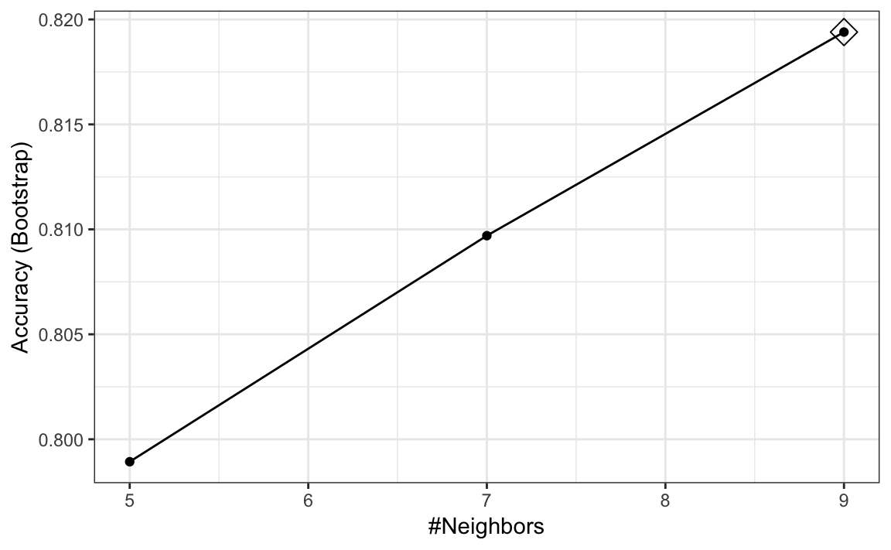
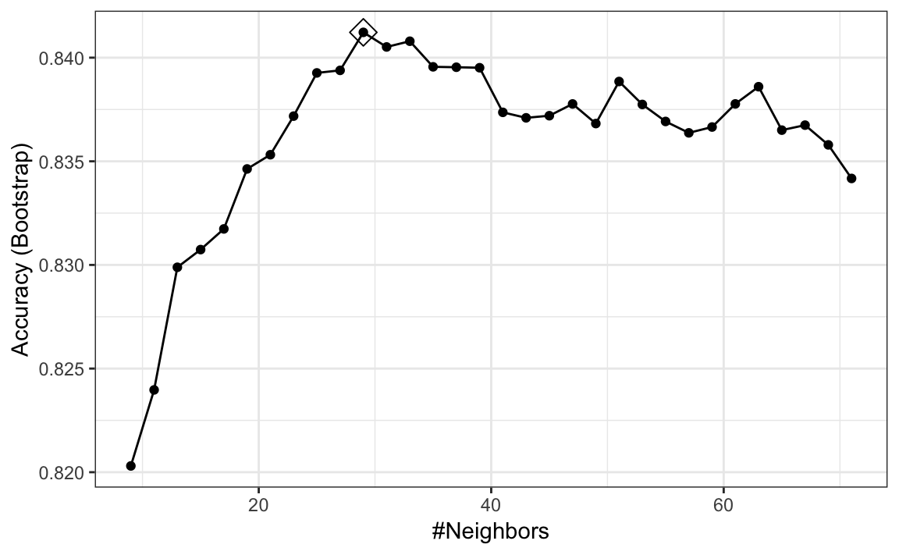
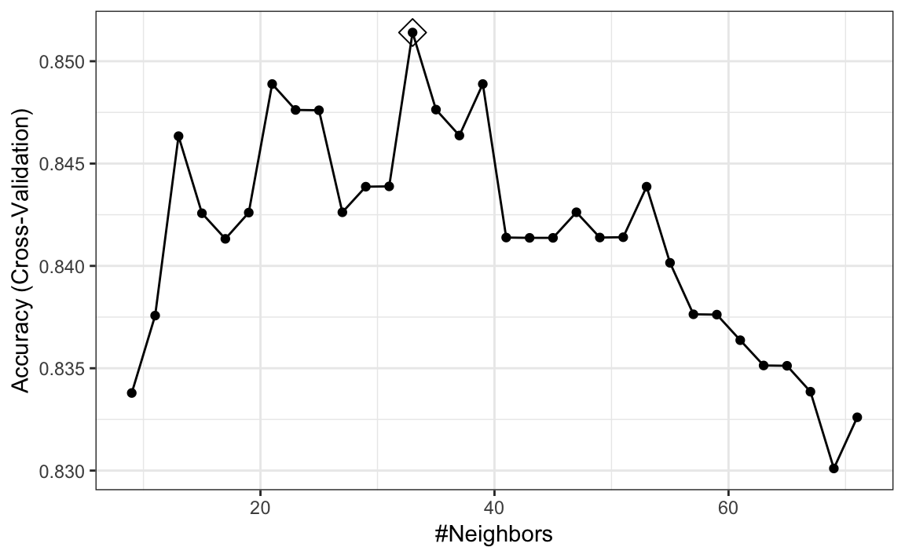
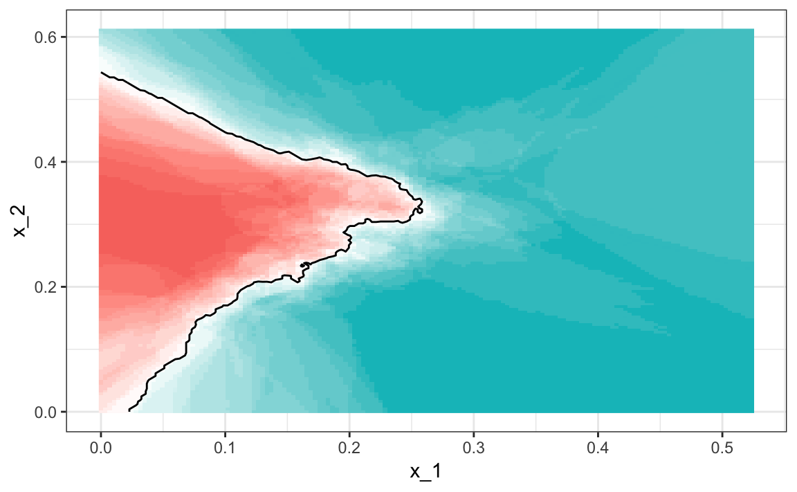
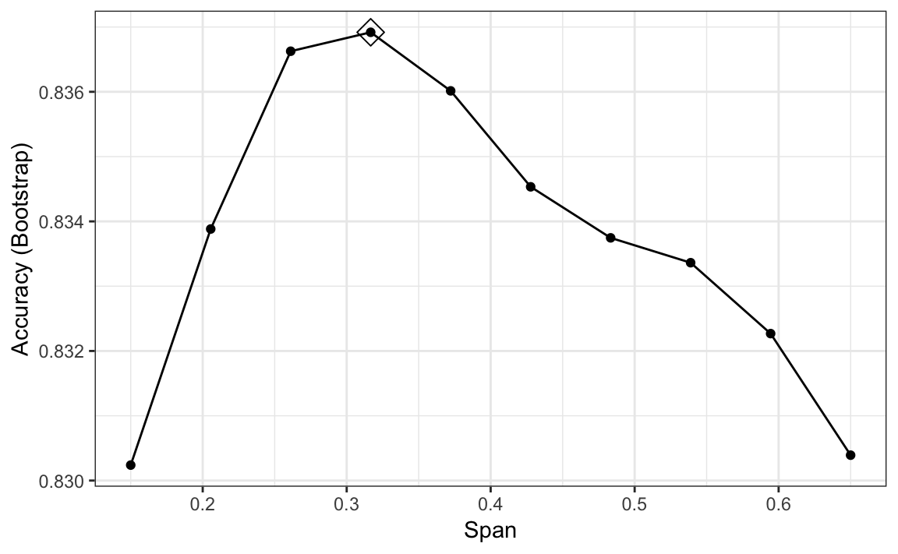
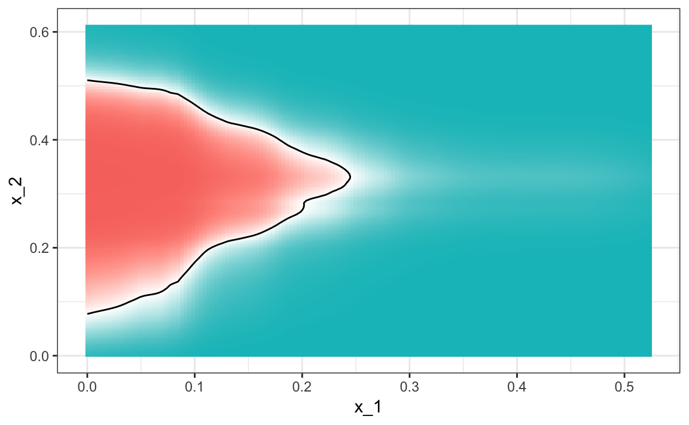

Chapter 31 The caret package
We have already learned about regression and kNN as machine learning algorithms. In later sections, we learn several others, and this is just a small subset of all the algorithms out there. Many of these algorithms are implemented in R. However, they are distributed via different packages, developed by different authors, and often use different syntax. The caret package tries to consolidate these differences and provide consistency. It currently includes 237 different methods which are summarized in the caret package manual102. Keep in mind that caret does not include the needed packages and, to implement a package through caret, you still need to install the library. The required packages for each method are described in the package manual.
The caret package also provides a function that performs cross validation for us. Here we provide some examples showing how we use this incredibly helpful package. We will use the 2 or 7 example to illustrate:
library(tidyverse)
library(dslabs)
data("mnist_27")31.1 The caret train functon
The caret train function lets us train different algorithms using similar syntax. So, for example, we can type:
library(caret)
train_glm <- train(y ~ ., method = "glm", data = mnist_27$train)
train_knn <- train(y ~ ., method = "knn", data = mnist_27$train)To make predictions, we can use the output of this function directly without needing to look at the specifics of predict.glm and predict.knn. Instead, we can learn how to obtain predictions from predict.train.
The code looks the same for both methods:
y_hat_glm <- predict(train_glm, mnist_27$test, type = "raw")
y_hat_knn <- predict(train_knn, mnist_27$test, type = "raw")This permits us to quickly compare the algorithms. For example, we can compare the accuracy like this:
confusionMatrix(y_hat_glm, mnist_27$test$y)$overall[["Accuracy"]]
#> [1] 0.75
confusionMatrix(y_hat_knn, mnist_27$test$y)$overall[["Accuracy"]]
#> [1] 0.8431.2 Cross validation
When an algorithm includes a tuning parameter, train automatically uses cross validation to decide among a few default values. To find out what parameter or parameters are optimized, you can read the manual 103 or study the output of:
getModelInfo("knn")We can also use a quick lookup like this:
modelLookup("knn")If we run it with default values:
train_knn <- train(y ~ ., method = "knn", data = mnist_27$train)you can quickly see the results of the cross validation using the ggplot function. The argument highlight highlights the max:
ggplot(train_knn, highlight = TRUE)
By default, the cross validation is performed by taking 25 bootstrap samples comprised of 25% of the observations. For the kNN method, the default is to try \(k=5,7,9\). We change this using the tuneGrid parameter. The grid of values must be supplied by a data frame with the parameter names as specified in the modelLookup output.
Here, we present an example where we try out 30 values between 9 and 67. To do this with caret, we need to define a column named k, so we use this:
data.frame(k = seq(9, 67, 2)).
Note that when running this code, we are fitting 30 versions of kNN to 25 bootstrapped samples. Since we are fitting \(30 \times 25 = 750\) kNN models, running this code will take several seconds. We set the seed because cross validation is a random procedure and we want to make sure the result here is reproducible.
set.seed(2008)
train_knn <- train(y ~ ., method = "knn",
data = mnist_27$train,
tuneGrid = data.frame(k = seq(9, 71, 2)))
ggplot(train_knn, highlight = TRUE)
To access the parameter that maximized the accuracy, you can use this:
train_knn$bestTune
#> k
#> 10 27and the best performing model like this:
train_knn$finalModel
#> 27-nearest neighbor model
#> Training set outcome distribution:
#>
#> 2 7
#> 379 421The function predict will use this best performing model. Here is the accuracy of the best model when applied to the test set, which we have not used at all yet because the cross validation was done on the training set:
confusionMatrix(predict(train_knn, mnist_27$test, type = "raw"),
mnist_27$test$y)$overall["Accuracy"]
#> Accuracy
#> 0.835If we want to change how we perform cross validation, we can use the trainControl function. We can make the code above go a bit faster by using, for example, 10-fold cross validation. This means we have 10 samples using 10% of the observations each. We accomplish this using the following code:
control <- trainControl(method = "cv", number = 10, p = .9)
train_knn_cv <- train(y ~ ., method = "knn",
data = mnist_27$train,
tuneGrid = data.frame(k = seq(9, 71, 2)),
trControl = control)
ggplot(train_knn_cv, highlight = TRUE)
We notice that the accuracy estimates are more variable, which is expected since we changed the number of samples used to estimate accuracy.
Note that results component of the train output includes several summary statistics related to the variability of the cross validation estimates:
names(train_knn$results)
#> [1] "k" "Accuracy" "Kappa" "AccuracySD" "KappaSD"31.3 Example: fitting with loess
The best fitting kNN model approximates the true conditional probability: 
However, we do see that the boundary is somewhat wiggly. This is because kNN, like the basic bin smoother, does not use a kernel. To improve this we could try loess. By reading through the available models part of the manual104 we see that we can use the gamLoess method.
In the manual105 we also see that we need to install the gam package if we have not done so already:
install.packages("gam")Then we see that we have two parameters to optimize:
modelLookup("gamLoess")
#> model parameter label forReg forClass probModel
#> 1 gamLoess span Span TRUE TRUE TRUE
#> 2 gamLoess degree Degree TRUE TRUE TRUEWe will stick to a degree of 1. But to try out different values for the span, we still have to include a column in the table with the name degree so we can do this:
grid <- expand.grid(span = seq(0.15, 0.65, len = 10), degree = 1)We will use the default cross validation control parameters.
train_loess <- train(y ~ .,
method = "gamLoess",
tuneGrid=grid,
data = mnist_27$train)
ggplot(train_loess, highlight = TRUE)
We can see that the method performs similar to kNN:
confusionMatrix(data = predict(train_loess, mnist_27$test),
reference = mnist_27$test$y)$overall["Accuracy"]
#> Accuracy
#> 0.85and produces a smoother estimate of the conditional probability:
